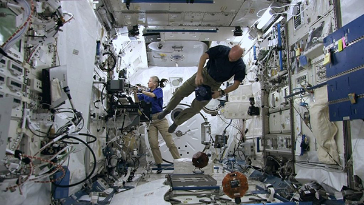
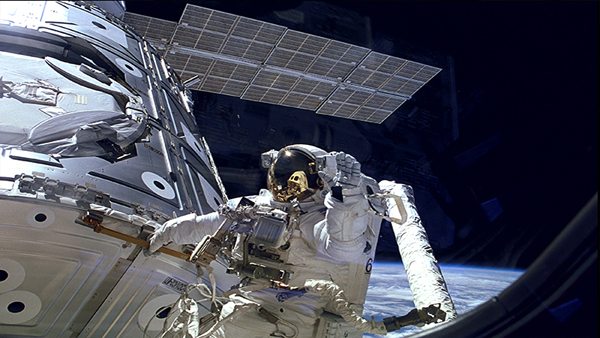

About the International Space Station (ISS)
The ISS serves as a microgravity and space environment research laboratory in which scientific experiments are conducted in astrobiology, astronomy, meteorology, physics, and other fields.The station is suited for testing the spacecraft systems and equipment required for possible future long-duration missions to the Moon and Mars. It is the largest artificial object in space and the largest satellite in low Earth orbit, regularly visible to the naked eye from Earth's surface. It maintains an orbit with an average altitude of 400 kilometres (250 mi) by means of reboost manoeuvres using the engines of the Zvezda Service Module or visiting spacecraft. The ISS circles the Earth in roughly 92 minutes, completing 15.5 orbits per day.
The station is divided into two sections: the Russian Orbital Segment (ROS), operated by Russia; and the United States Orbital Segment (USOS), which is shared by many nations. Roscosmos has endorsed the continued operation of ISS through 2024, but had previously proposed using elements of the Russian segment to construct a new Russian space station called OPSEK. As of December 2018, the station is expected to operate until 2030.
The first ISS component was launched in 1998, with the first long-term residents arriving on 2 November 2000. Since then, the station has been continuously occupied for 19 years and 200 days. This is the longest continuous human presence in low Earth orbit, having surpassed the previous record of 9 years and 357 days held by the Mir space station. The latest major pressurised module was fitted in 2011, with an experimental inflatable space habitat added in 2016. Development and assembly of the station continues, with several major new Russian elements scheduled for launch starting in 2020. The ISS consists of pressurised habitation modules, structural trusses, photovoltaic solar arrays, thermal radiators, docking ports, experiment bays and robotic arms. Major ISS modules have been launched by Russian Proton and Soyuz rockets and US Space Shuttles.
The ISS is the ninth space station to be inhabited by crews, following the Soviet and later Russian Salyut, Almaz, and Mir stations as well as Skylab from the US. The station is serviced by a variety of visiting spacecraft: the Russian Soyuz and Progress, the US Dragon and Cygnus, the Japanese H-II Transfer Vehicle, and formerly the European Automated Transfer Vehicle. The Dragon spacecraft allows the return of pressurised cargo to Earth (downmass), which is used for example to repatriate scientific experiments for further analysis. The Soyuz return capsule has minimal downmass capability next to the astronauts.
The ISS has been visited by astronauts, cosmonauts and space tourists from 19 different nations. As of September 2019, 239 people from 19 countries had visited the space station, many of them multiple times. The United States sent 151 people, Russia sent 47, nine were Japanese, eight Canadian, five Italian, four French, three German, and one each from Belgium, Brazil, Denmark, Kazakhstan, Malaysia, the Netherlands, South Africa, South Korea, Spain, Sweden, the United Arab Emirates, and the United Kingdom.